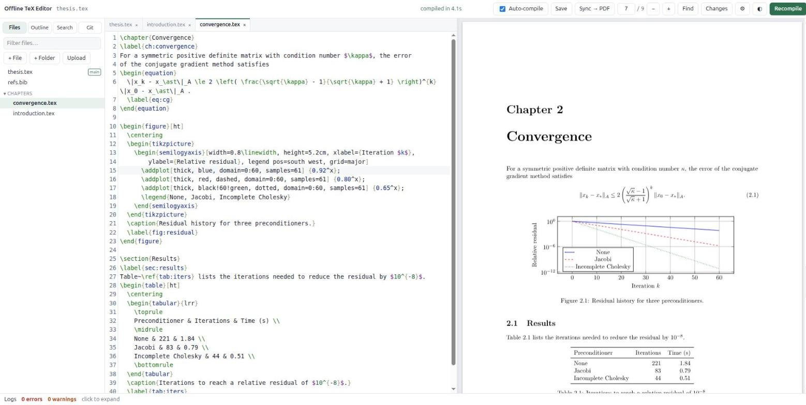

Offline TeX Editor
A LaTeX editor that runs on your own machine and opens in your browser: edit, recompile with latexmk, and preview the PDF side by side with SyncTeX in both directions.
Fully offline: no accounts, no cloud, no internet connection needed. It runs as a small server on your computer.
pip install offline-tex-editor
Published on PyPI: pypi.org/project/offline-tex-editor

Install
You need Python 3.9 or newer and a TeX distribution (see Requirements). Then:
pip install offline-tex-editorOr install it with pipx, which keeps it apart from your other Python packages:
pipx install offline-tex-editorTo update later, run pip install --upgrade offline-tex-editor (or pipx upgrade offline-tex-editor).
Run
Start it on your LaTeX project's folder:
offline-tex-editor --root path/to/your/project --open--open opens the editor in your browser. Without it, open the address it prints, usually http://127.0.0.1:8765/. Stop the editor with Ctrl+C in the terminal.
Started without --root, it uses the current folder. If the shell says the offline-tex-editor command is not found, pip put it in a folder that is not on your PATH (pip prints a warning naming that folder). Run python -m offline_tex_editor instead, or install with pipx.
Requirements
- Python 3.9 or newer
- A TeX distribution with
latexmkandsynctex. TeX Live includes both (Debian/Ubuntu:sudo apt install latexmk texlive-latex-recommended; macOS: MacTeX). With MiKTeX on Windows,latexmkalso needs Perl. - Optional:
gitfor the Git panel,biberfor biblatex,texcountfor the word count - A browser from 2024 or later
Developed and tested on Linux. It is expected to work on macOS; on Windows it has not yet been tried with a real TeX installation, so reports are welcome.
Features
Writing
- LaTeX editor with tabs for open files, syntax highlighting, bracket matching, go to line, and comment toggling (Ctrl/Cmd+/)
- Find and replace in the file (Ctrl/Cmd+F; Ctrl+H, or Cmd+Option+F on a Mac, for replace): every match is highlighted and counted, with options for case, whole words and regular expressions; replace one match at a time or all at once (one undo step)
- Autocompletion for
\ref/\creflabels,\citekeys (matching author and title too), environments (\beginadds the\end), file names in\inputand\includegraphics, and commands, including your own\newcommands - Spell check with your browser's dictionary, which skips LaTeX commands (turn it on in ⚙)
- Files changed by other programs reload automatically; saving over a newer version on disk asks first. Encodings (UTF-8 or Latin-1) and line endings (LF or CRLF) are kept as they are
The project
- File tree with images and PDFs; create, rename, move and delete files and folders (deleted files go to
build/.editor-trash/, so mistakes can be undone); add files with a button or by dropping them on a folder; preview images and PDF figures - Search and replace in all files, with the same options (Ctrl/Cmd+Shift+F). With regular expressions,
$1in the replacement inserts the first group ($&the whole match); backslashes are kept as typed, so\textbf{$1}works - Document outline that follows
\input,\include,\subfileand\import, and highlights the current section - Word count (with
texcount, which comes with TeX Live)
Compiling
- Recompiles on save (can be switched off) or with Ctrl/Cmd+Enter; a Stop button and a time limit for runaway documents; a save made during a compile is compiled next
- pdfLaTeX, XeLaTeX or LuaLaTeX: see Main document and engine
- Errors and warnings with file and line (click to open), the TeX context, and a plain-language hint for common errors. BibTeX and biber messages are shown too, and an error inside the generated bibliography points at the
.bibentry that caused it - For long documents: a fast draft mode that draws images as boxes, and "compile only" one
\included chapter - "Changes": a word-level diff of the sources between the last two compiles that changed something
The PDF
- Preview that keeps its scroll position across recompiles; zoom and page navigation
- Find in the PDF (Ctrl/Cmd+F when the editor is not focused): finds words split by ligatures, line breaks and hyphenation. PDF text can be selected and copied
- SyncTeX: double-click the PDF to jump to the source, or press Ctrl/Cmd+J to find the cursor in the PDF
Git and GitHub
- Sync in one click: pull, then push. When your branch and GitHub both have new commits, choose to rebase or merge. Separate Pull, Push and Fetch buttons are there too, and the panel fetches in the background, so it shows when GitHub has commits you don't have yet
- Start a git repository for a project, and connect it to a GitHub repository by pasting the repository's address (create an empty repository on GitHub first); the first Sync then sends your commits there
- Changed files with diffs, stage/unstage, commit, history. Conflicts are listed and highlighted in the editor; mark them resolved, then finish (or abort) the merge or rebase
- Uses your own git and its credentials; the editor stores nothing. To push to GitHub over https, sign in once with the GitHub CLI (
gh auth login, thengh auth setup-git) or set up another credential helper
Options
| Option | Default | Meaning |
|---|---|---|
--root DIR | current folder | LaTeX project folder |
--main FILE | see below | main .tex file, relative to --root |
--engine NAME | auto | pdflatex, xelatex or lualatex; see below |
--jobname NAME | name of the main file | PDF name in build/ |
--shell-escape | off | let the document run programs (minted before v3, svg, gnuplottex); only for projects you trust |
--timeout N | 600 | stop a compile after N seconds |
--port N | first free from 8765 | port; several projects can be open at once |
--host ADDR | 127.0.0.1 | bind address; the default is reachable only from your machine |
--open | off | open the editor in your browser |
--no-initial-compile | off | skip the compile at start-up |
--version | print the version |
The PDF and auxiliary files go to build/ in the project folder.
Main document and engine
Main document. --main if given; otherwise main.tex; otherwise the .tex file with \documentclass that looks most like a main file. A % !TEX root = ../thesis.tex comment in the chosen file is followed. To work on another document of the same project (slides, a cover letter), pick it in ⚙.
Engine. In this order:
--engineon the command line;- a
% !TEX program = xelatex(orlualatex,pdflatex) comment at the top of the main file, as used by TeXShop, TeXstudio and VS Code; $pdf_modein the project's.latexmkrcorlatexmkrc;- otherwise pdfLaTeX.
⚙ shows which one is in effect and why.
Keyboard shortcuts
| Keys | Action |
|---|---|
| Ctrl/Cmd+S | Save (and recompile, if auto-compile is on) |
| Ctrl/Cmd+Enter | Recompile |
| Ctrl/Cmd+J | Show the cursor position in the PDF |
| Double-click the PDF | Jump to the source |
| Ctrl+Space | Complete a command, label or citation key |
| Ctrl/Cmd+/ | Comment or uncomment lines |
| Ctrl/Cmd+F | Find in the file (in the editor) or in the PDF (elsewhere) |
| Ctrl+H, Cmd+Option+F | Find and replace in the file |
| Enter, Shift+Enter | Next and previous match (also F3 and Ctrl/Cmd+G) |
| Ctrl/Cmd+Shift+F | Search and replace in all files |
Security
The editor is meant for one person on their own machine. It has no login, so:
- Keep the default
--host 127.0.0.1. The Git panel can push with your credentials, and anyone who can reach the port can use it. Binding to another address prints a warning; put something with authentication in front of it if you need remote access. - File operations stay inside the project folder, never touch
.git/orbuild/, and only open or create editable source types (.tex .bib .sty .cls .bst .md .txt .csv .py .shand a few more). Uploads are limited to those and to images and PDFs. Deleted files are moved tobuild/.editor-trash/, not erased. - It refuses requests that a web page from another site could make while the editor is open: requests whose
Hostheader is not this machine (DNS rebinding), and POSTs that are cross-origin or are not JSON (cross-site request forgery). The page cannot be framed by other sites, and its Content-Security-Policy allows no inline or evaluated scripts. Images are served with a sandboxing policy, so an SVG cannot run scripts. - Git commands never prompt: a push that needs credentials you have not set up fails with git's message instead of hanging.
- Compiling runs
latexmk, which reads the project's.latexmkrc(Perl code);--shell-escapelets the document run programs. Only compile projects you trust, as with any LaTeX toolchain.
To report a security problem privately, see Contact.
License
MIT License; the full text comes with the package. Offline TeX Editor includes CodeMirror 5 (MIT) and pdf.js (Apache-2.0), which keep their own licenses.
TeX is a trademark of the American Mathematical Society.
Contact
For ideas, bug reports and questions, use the suggestion box below, or look through the issue tracker to see whether someone has asked already.
To report a security problem, use private vulnerability reporting instead, so it stays private until it is fixed.
Offline TeX Editor is made by KSMubasshir.
Suggestion box
Ideas, bug reports and questions are all welcome. Sending opens a pre-filled issue on GitHub, where you can check it before you post it. You need a GitHub account.